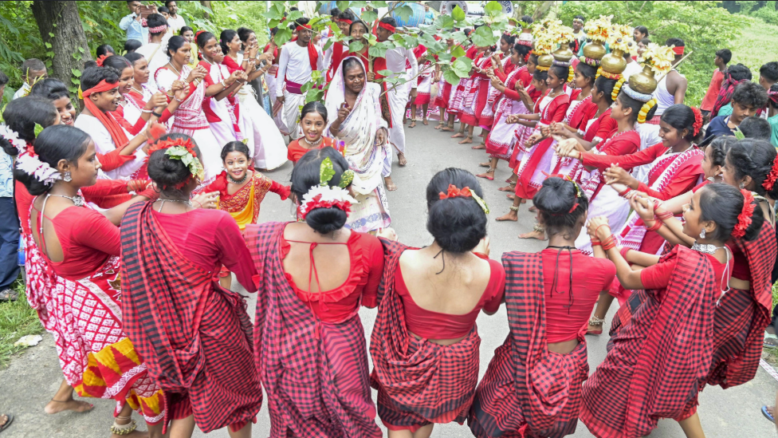
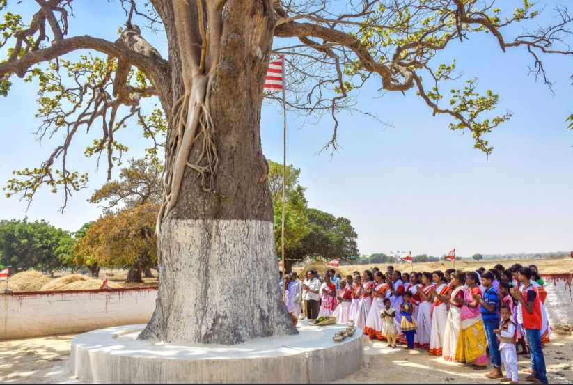
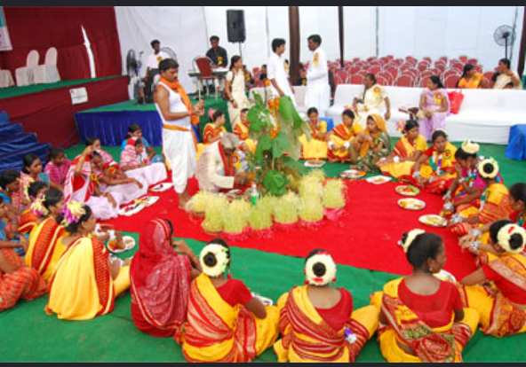
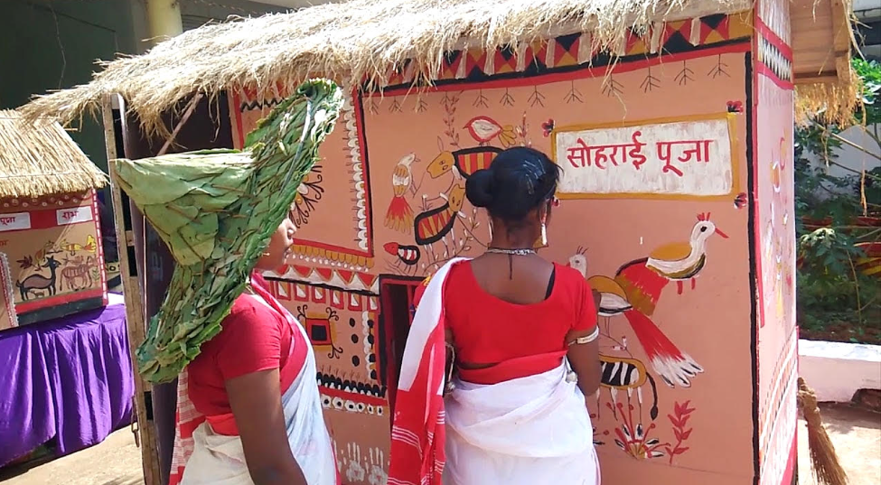
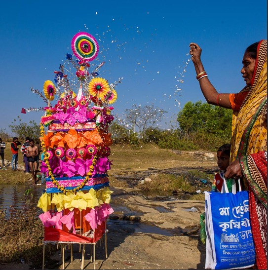
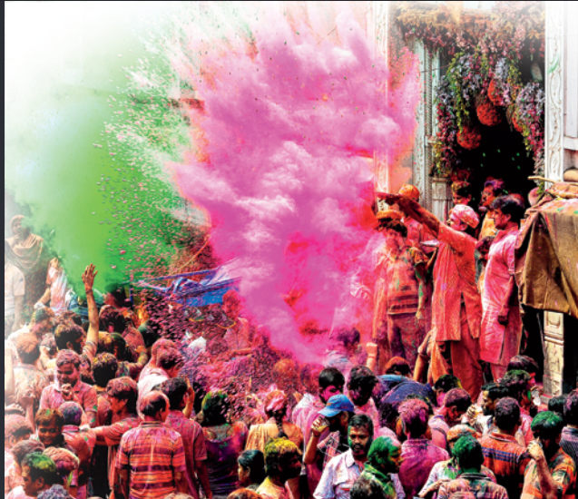

JHARKHAND TRIBAL FESTIVALS

HOME | INSTRUMENTS | TRIBAL MUSIC | FESTIVALS | VIDEO
Introduction
Jharkhand is known for its rich tribal culture and traditional festivals. Festivals are an important part of the social and cultural life of tribal communities. People celebrate thees occasions with traditional songs, dances, musical instruments, rituals and community gatherings.
Different communities have thier own traditions and ways of celebrating festivals. Music and dance are commonly used to create a joyful atomsphere and tp bring people together.
1. Sarhul Festival

Sarhul is an important festival celebrated by several tribal communities of jharkhand. It is associated with nature, spring and the Sal tree. The festival reflects the close relationship between people and nature.
During the celebrations, people gather together and take part in traditional songs, dances and cultural activities. traditional musical instruments are also played during performances.
2. Karma Festival

Karma is a popular traditional festival celebrated by tribal communities in jharkhand. The festival is associated with traditional beliefs and community celebrations.
Traditional songs and group dances are imporatant parts of Karma celebrations. People gather together and celebrate with music, dance and cultural activities.
3. Sohrai Festival

Sohrai is traditionally associated with the harvest season and cattle. It is an important cultural celebration in jharkhand.
During Sohrai, people decorate their homes, participate in community activities and celebrate with traditional songs and cultural practices.
4. Tusu Festival

Tusu is a traditional festival associated with the winter and harvest season in parts of jharkhand. Songs are an important part of Tusu celebrations.
People sing traditional Tusu songs and participate in cultural programmes during the celebration.
5. Fagua Festival

Fagua is associated with the spring season and is celebrated with traditional songs, music and social gatherings.
The festival provides an opportunity for people to meet, celebrate and participate in traditional cultural activities.
Important Tribal Festivals
Music and Dance During Festivals

Music and dance are important parts of many tribal celebrations in jharkhand. People perform traditional songs and dances in group while musician play drums and other instruments.
Mandar, Nagara, Dhol, Dhamsa and other traditional instruments can be used to provide rhythm during cultural oerformances.
Traditional Dress and Cilture
Traditional colthing, ornaments, songs and dances are important features of cultural celebrations. People may wear traditional clothes and participate in group performances during festivals.
These celebrations provide an opportunity for communities to pass cultural knowkedge and traditions from one generation to anoother.
Importance of Tribal Festivals
- They preserve traditional culture.
- They bring community members together.
- They encourage traditional songs and dances.
- They preserve traditional customs and practices.
- They celebrate nature and seasonal changes.
- They help younger generations learn about their heritage.
- They provide oppourtunities for cultural perfomances.
Festivals and Nature
Nature has an important place in the cultural traditions of many tribal communities. some festivals are connected with spring, forests, agriculture, harvest and animals.
These celebrations reflects the reletionship between community life and the natural environment.
Festivals and Tribal Music
Traditional music gives festivals a special cultural character. Songs, Drums, dancing and group performances help people celebrate together.
Through these performances, traditional musical knowledge and ciltural practices can be passed from older generations to younger generations.
Conclusoin
Jharkhand tribal festivals are an important part of the cultural heritage of the state. Sarhul, Karma, Sohrai, Tusu and Fagua are examples of traditional celebrations associated with different aspects of communiy and seasonal life.
Music, dance, traditional instruments and community participation make these celebrations an important expression of jharkhand's cultural traditions.
Watch Jharkhand Tribal Festival Videos
CLICK HERE TO WATCH JHARKHAND TRIBAK FESTIVALS ON YOUTUBECLICK HERE TO WATCH SARHUK AND KARMA FESTIVAL VIDEOS
Explore More
HOME PAGEMUSICAL INSTRUMENTS
TRIBAL MUSIC
VIDEO PAGE
Project Topic:Jharkhnad Tribal Music System